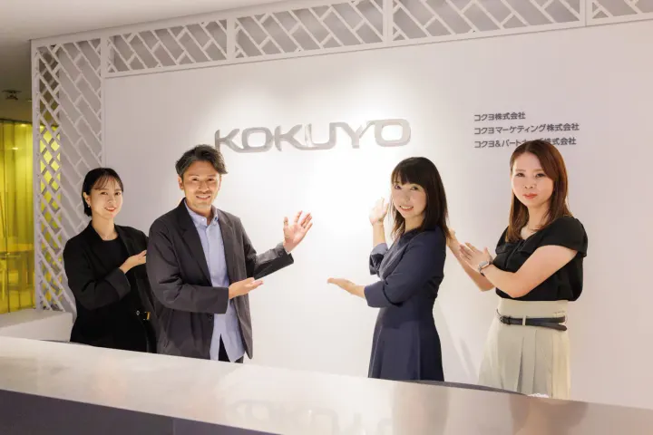
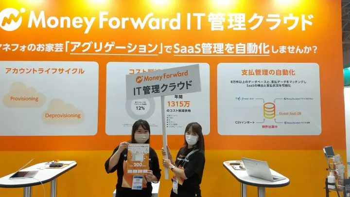

Voice
導入事例・お客様の声
これまで多様な業界のBtoB企業様の新規開拓を支援してきました。代表的な導入事例をご紹介します。


株式会社リスポ
5点満点中5点
良かった点・解決した課題
弊社の難しい商材にもかかわらず、サービスをかみ砕きトークスクリプトの改善を実施、また荷電対象の絞り込みに関しても弊社と色々と実験した結果、とても良いリストが出来た。
改善点や今後期待すること
特段ありません。
こんな方におすすめ
EC業界は、弊社と色々やった上でそれなりに知見があるかと思います。また、女性が多い会社だけあって、女性向けのサービスは良いかと思います。
株式会社TUKURU
5点満点中5点
良かった点・解決した課題
主旨にあった営業方法を適切に提案してくれ、コミュニケーションもこまめに取って頂けたり、臨機応変に対応もしていただけたおかげで3か月間という短い期間ではありましたが、かなり良い結果で終えることができました。
こんな方におすすめ
既に業界が絞れていたり、一つの目的のものに対してのアタックを効率よく進めてくれるため、イベントの企業収集などで人員不足を感じている企業にはおすすめです。
LYL株式会社
5点満点中5点
良かった点・解決した課題
事前のヒアリングにおいて、事業の特性や強み、顧客傾向のより深いところまで聞いてくださり、その情報をもとにテレアポをしていただきました。また、ちゃんとトークスクリプトの改善や、顧客リストの変更についても細かく修正してくださり、とても助かりました。成果としてもしっかりアポ取得していただきました。
改善点や今後期待すること
今回は弊社の事業フェーズの問題だったので、特にネガティブな点はありません！
社名非公開
5点満点中5点
良かった点・解決した課題
- 非常にスピード感をもって対応いただけた
- こちらの意向を汲み取り、柔軟に対応いただけた
- トライアルでアウトバウンドしていただけたので、実際にパフォーマンスを適切に評価することができた
- こちらが想定している以上に高いパフォーマンスを出してくれた
こんな方におすすめ
アウトバウンド営業
Trouble
こんなお悩みありませんか？
- 新規開拓する
マンパワーが不足 - 新規開拓で
離職率が
上がってしまう - 即戦力になる人材が
採用できない
- 女性営業の
応募がこない - 一時的に
営業力を上げたい - 人材採用で
失敗した経験がある - 繁忙期だけ
営業力を上げたい
その課題、実績豊富なプロの女性営業チームが解決します。
Solution
採用コスト・採用リスクを回避したい。
採用コスト・採用リスクを回避したい。
女性の営業代行がお悩みを解決！！
採用リスクもコストも回避して、「必要な期間だけ」実績豊富なプロの女性チームが全力サポート。
採用と営業スキルのお悩みを解決し、売上に貢献します。
Feature
マーシーズが選ばれる３つの特徴
営業に特化した研究と営業スタイルで、女性営業チームがBtoB新規開拓を継続的に支援します。

1.営業スキルアップを意識
BtoB新規開拓の経験を活かしたトーク設計で、初回接点の印象と商談の質を高めます。単に架電数を増やすのではなく、商材理解・ターゲット理解・会話品質をそろえ、見込み度の高い商談につながる営業活動を目指します。
2.ノウハウを活用
テレアポからインサイドセールスまで、蓄積した営業ノウハウを活かして柔軟に支援します。新規開拓でつまずきやすいリスト選定、受付突破、担当者接続、初回説明の流れを整理し、貴社の営業活動に合う形で運用します。

3.定例ミーティングでブラッシュアップ
活動結果を定例で振り返り、トークやリストを継続的に改善します。架電結果を共有しながら、反応のよい業種・役職・訴求を見極め、外注で終わらない伴走型の営業支援として改善を重ねます。
Solution
マーシーズが解決できること
女性営業チームがBtoB企業の新規開拓を代行します。テレアポによる初回接点づくりから、インサイドセールスでのナーチャリング、商談獲得までを一気通貫で支援し、貴社の営業リソース不足を補います。
- 新規開拓営業代行（アポイント獲得・商談創出）
- テレアポ代行（リスト精査から架電・記録まで）
- インサイドセールス代行（見込み顧客の育成・商談化）
- 展示会・問い合わせリードのフォロー
Service
得意な営業支援内容
営業代行・テレアポ・インサイドセールスを軸に、貴社の体制や目的に合わせて支援範囲を組み立てます。
新規開拓営業の戦略策定
アポイント獲得・商談創出に向けた初回接点づくりを支援します。新規開拓に必要な仮説整理、ターゲット選定、トーク改善まで含めて、営業活動の前進をサポートします。

テレアポ代行
リスト精査から架電・記録まで、営業活動の前段を丁寧に進めます。女性営業ならではの聞き取りやすい会話で、担当者との接点を作ります。
インサイドセールス代行
見込み顧客の育成・商談化を継続的に支援します。問い合わせ、展示会、資料請求などで得たリードに対して、適切なタイミングでフォローし商談機会につなげます。

展示会リードフォロー
獲得したリードを取りこぼさないよう、追客と商談化を支援します。名刺交換後の温度感が高いうちに接点を作り、営業担当者が商談に集中しやすい状態を整えます。
営業活動に連動するPR・メディアアプローチ
PR・メディアアプローチは、営業代行サービスの一部として認知拡大や信頼材料づくりを支援します。商談獲得を後押しする補助施策として整理しています。
人材紹介・研修サービス向け営業支援
求人企業の開拓、採用担当者へのアプローチ、法人研修・人材育成サービスの導入企業開拓など、業界特有の営業課題に合わせて支援内容を設計します。
For your industry
業界・商材別の営業支援
業界特有の営業課題に合わせて、専用の支援メニューをご用意しています。
人材紹介・人材派遣向け
人材紹介・人材派遣・採用支援サービスの新規開拓を支援します。求人企業の開拓、採用担当者へのアプローチ、商談獲得、リード管理までを女性営業チームが丁寧に進めます。
研修サービス向け
法人研修・リスキリング・人材育成サービスの導入企業開拓を支援します。人事部門・育成担当・経営層へのアプローチから商談獲得、ナーチャリングまで対応します。
研修向け営業支援を見る自治体アプローチに特化した営業代行
自治体・官公庁、外郭団体などへの新規アプローチを支援します。担当部署・窓口の特定から、提案機会の創出、商談化までを、公共領域ならではの丁寧なコミュニケーションで進めます。
自治体向け営業支援を見る
FAQ
よくあるご質問
何ヶ月から依頼できますか？
トライアルとして1ヶ月からお引き受け可能です。スクリプト・リスト・PDCAで成果を積み上げるため、3ヶ月以上の継続をおすすめしています。
架電リストは用意する必要がありますか？
お持ちの場合はご持参いただけます。ない場合もターゲット条件をヒアリングし、リスト作成からサポート可能です。
どんな人が担当しますか？
営業経験豊富な女性スタッフが担当します。新人がアサインされてスキル不足、ということがないようにしています。
テレアポ代行と営業代行の違いは何ですか？
テレアポ代行は「アポイント獲得」に特化した電話営業の代行、営業代行はアポ獲得から商談・クロージングまで含む支援です。マーシーズは両方に対応し、組み合わせも可能です。
今の時代、テレアポは本当に効果がありますか？
BtoBの新規開拓では今も有効です。電話は担当者と直接会話でき、課題をその場でヒアリングして商談につなげやすい特性があります。
外注すると社内に営業ノウハウが溜まらないのでは？
日報・週次レポート・定例ミーティングでトークや架電結果を共有し、貴社にノウハウが蓄積される伴走型でサポートします。
Price
料金と、ご相談から開始までの流れ
まずは課題、商材、ターゲット、営業体制を伺ったうえで、必要な支援範囲を整理します。
月額費用の目安
月額 195,000円〜
支援範囲に応じて個別にお見積もり
開始までの目安
最短 5営業日
ヒアリング後、スピーディに支援開始
- 1無料相談・ヒアリング
- 2ご提案・お見積もり
- 3契約・キックオフ
- 4リスト作成・トーク設計
- 5営業活動開始・定例レポート